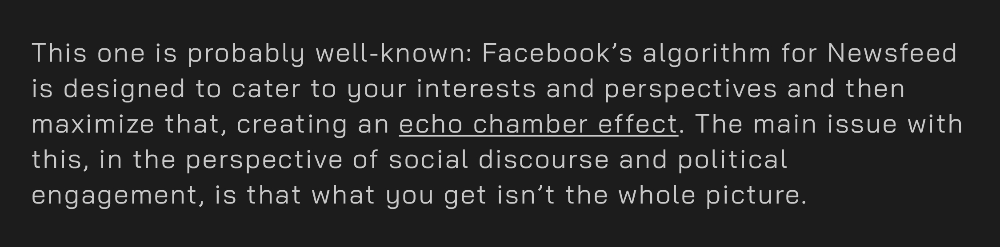
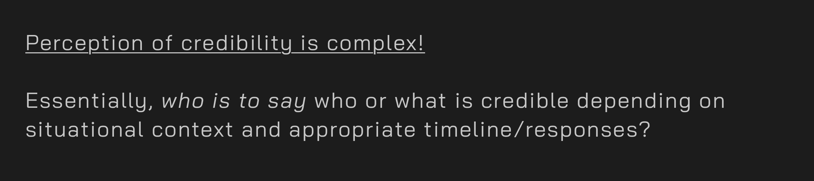
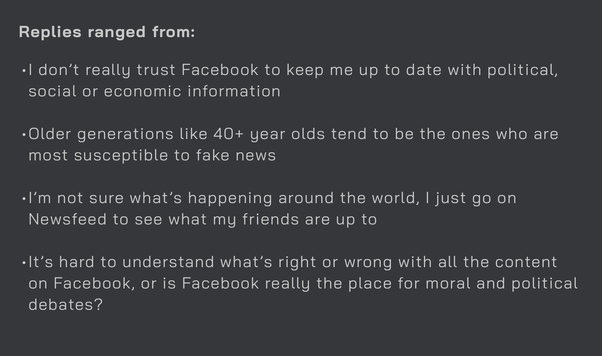
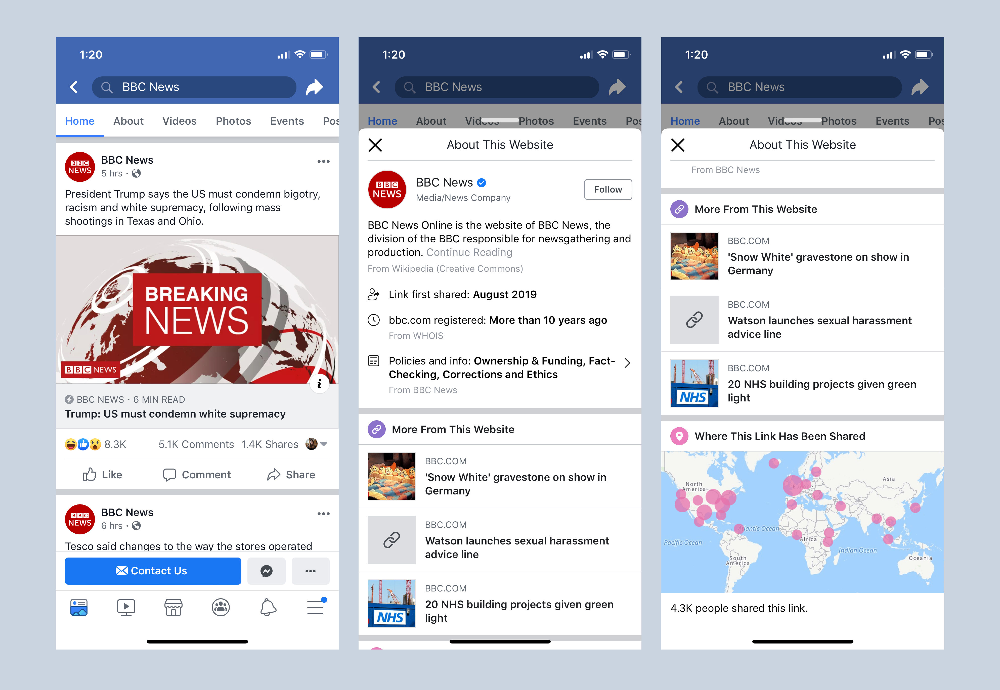
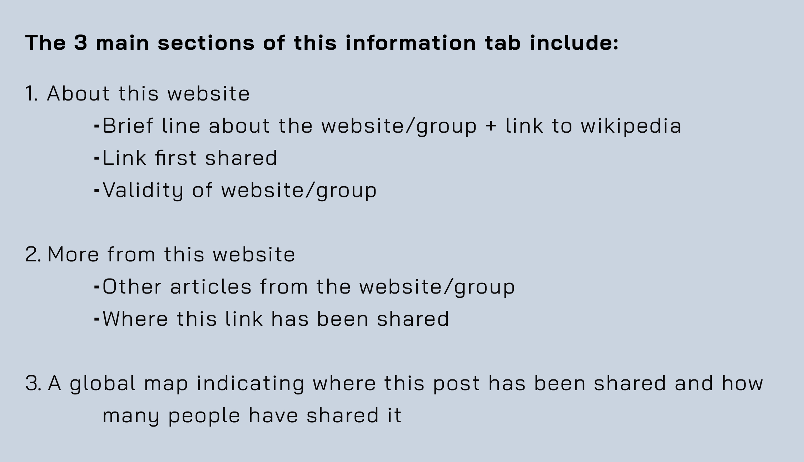

Fake News, Real Problems
UX Design, UX Strategy
By the way, I want to state that I am in no way criticizing Facebook or other parties involved in this case study. All the work done is an exploration into the problem space of fake news.
Earlier this year, after evaluating my old portfolio projects, I realized that I had veered somewhat off track from UX design and was heading into a weird space of front-end development and ??? design. This was definitely not what I wanted to be doing, so I reached out to some old connections to gain inspiration and get back on track.
Moreover, I wanted to do something that was based on my interests of social sciences and humanitarianism movements, which I found to be lacking in current technology spaces.
That is, until talking to one particular interaction designer, he proposed:
“What about designing the issue of fake news for Facebook? That’s a real, current issue that needs to be addressed, so what if you come up with some ideas for that?”
Fake news is a real problem, and although Facebook has been taken active measures in combating and reducing fake news and content on their Newsfeed platform, with the upcoming 2020 U.S. Presidential elections, it might be time to revisit this problem again.
And don’t forget social media related events in other countries eg. Nigeria (2019) for example: here, here and here or India’s issue with fake news on WhatsApp (2018-19) read about it: here and here.
For me, this was an opportunity to get a dig at a really complex, multifaceted real world problem that had the humanitarian edge that I was looking for, and to really try to practice UX research and design from start to finish.
Small deets.
Role
UX design, research + strategy.
Tools used:
Sketch, Adobe XD
Brief
The following is a personal case study that looks at some potential solutions and ideas for the issue of fake news on Facebook’s Newsfeed platform.
Through this project, my process was guided by qualitative user research, and reading (not again…) academic papers, in conjunction to Facebook’s design guidelines, and many ‘haha let’s start over again!!’.
Year
This project was completed over a cumulative period of 5 weeks from spring to summer 2019.
Introduction.
Going into university, I knew I was really interested in social impact, human relationships, and how & why people did what they did. But I wanted solve problems creatively. Design allowed a way to combine both these fields together, and this problem was a perfect challenge.
As popularly defined by the internet, fake news can be thought of as misrepresented, false, inaccurate information that is then presented as genuine, verified information. Signature trademarks include being sensationalized, clickbait titles/images and often appeals to emotions.
Fake news is created with the intent to damage or influence some type of event, agency, or persons for personal, financial or political gains. Or for mischief, ‘trolling’, or attention-seeking. Often times, it’s spread because fake news is difficult to distinguish from factual news, and people genuinely mistaken fake news as something real.

Remember when the world was suppose to end in 2012... and global warming is real...
With that said, it’s difficult to even know where to begin for this intricate matter. The issue of fake news is complicated for a lot of reasons:
- The more extreme one’s perspective is, the more extreme content that aligns to that user’s views is shown to the user. This allows the grounds for unregulated radicalization between users of different perspectives.
- Another side effect of this personalization is that content that is not aligned or related to the user’s current state of perspective is UNLIKELY to be shown. Furthermore, most of the related content that is shown would mostly be around that user’s demographics, which doesn’t offer too much differentiation in perspective. All this adds to further political radicalization, which you can read more about here, here and here.
This infographic from First Draft News explains the different types of false news pretty well
- Who controls what information is shown, what are their intentions/history/perspectives
- User generated/expert-generated/hybrid responses
- Are they: Opinions, facts, experiences?
- Thinking styles, personal upbringing, political/cultural influences
- There are a lot of factors that make this complex!
- There’s a lot of information on the internet, and we are often influenced by those closest around us. Deciphering through all the information in a fair and unbiased manner while being aware of the dominant power structures, information sources and social constructs is not that easy.
- Prior exposure (to anything really) can also increase perceived accuracy or acceptance of fake news eg. illusory truth effect, where repeated statements or content is easier to process and thus, is perceived to be more truthful than new statements.
And there’s a lot of other reasons that can explain the causes, processes and perpetuation of fake news. However, I won’t focus on all the reasons due to sheer quantity and complexity but I will focus on what frustrates the users around me (namely, millennials).
The Exploration.
As a millenial, or Gen Z??, I’ve spent almost a decade of being on Facebook (that’s nearly half my life just saying). I personally don’t really use Facebook Newsfeed to check for real-world events, but rather as a source of keeping somewhat up to date with my social circle and as a source of internet meme culture (lol).
However, after the blow-up about Facebook in 2016, I have become more wary of information that originate from Facebook. I started by asking other Facebook users what they thought about the topic of fake news, and if they had any experiences with fake news on Facebook.
But the strongest lines that stood out to me were:
I only clicked on that information button (on the Facebook post) once. But it doesn’t really provide me with any relevant information haha, so I never used it again after.
Oh, I didn’t even notice the information button, I thought it was for an ad or something! Yeah I’m not sure if Facebook is doing well enough of a job for something as important as this.
Now, it is also important to remember that at the end of the day, Facebook is a private corporation whose main goals aren’t to set ethical and moral guidelines for information on its platforms. But as created for social gatherings and connections, Facebook should be somewhat accountable for its role.
Facebook has been active in taking action for where it is involved. As recent as April 2019, Facebook has been getting enlisting the help of outside experts, human intervention and technology to quickly and accurate target fake news at its source and removal/reduction.
Let’s take a look at Facebook’s current designs in combating fake news.
Presenting the information button and the more info slide up tab
The biggest change that Facebook made to combat fake news was the information button that allows users to gain more information about the source of the post and the group posting it.
I asked some Facebook users what they thought about this, and these are some of their comments:
Deeper insights.
Ok and from my research i found this stuff
Ok and from my research i found this stuff
Ok and from my research i found this stuff
Ok and from my research i found this stuff
Reframing the problemooo.
Ok and from my research i found this stuff
Ok and from my research i found this stuff
Ok and from my research i found this stuff
Ok and from my research i found this stuff
The redesigns.
Ok and from my research i found this stuff
Ok and from my research i found this stuff
Ok and from my research i found this stuff
Ok and from my research i found this stuff
How we got from there to here.
Ok and from my research i found this stuff
Ok and from my research i found this stuff
Ok and from my research i found this stuff
Ok and from my research i found this stuff
The impact.
Ok and from my research i found this stuff RESULTS NOW
Ok and from my research i found this stuff RESULTS NOW
Ok and from my research i found this stuff RESULTS NOW
Ok and from my research i found this stuff RESULTS NOW
Other projects
one liner blah blah
one liner more more
one liner fricking fell from a blackberry bush lols